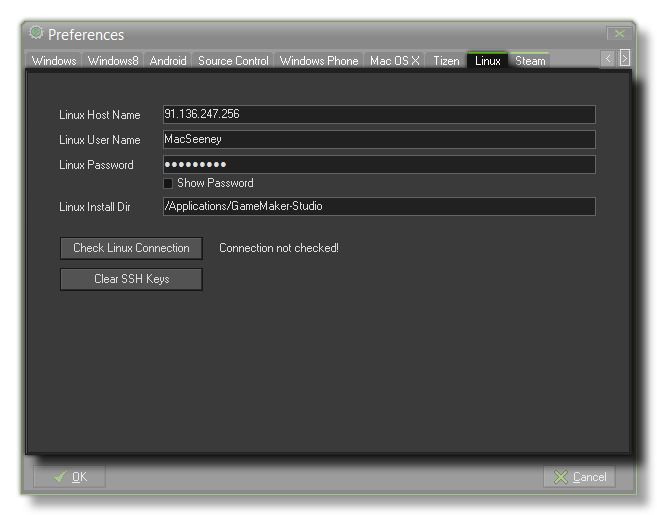

Ubuntu (Linux) Preferences
The section details the Ubuntu (Linux) preferences tab.

For GameMaker:Studio to work with a Linux OS sytem, a few things need to be set up first in the preferences. Once you open this tab you will see the following sections that need to be filled in for
GameMaker:Studio to be able to communicate properly with your Linux system (either as a Virtual Machine or a separate computer running Linux) and for you to test your games :
- Linux Host Name - This is the name (or IP address) of the Linux system on the local network that you are going to use.
- Linux User Name - This is the name of the user account that will be active for testing your games.
- Linux Password - The password for the user account specified in the section above.
- Linux Install Directory - The place on the Linux system that you wish GameMaker:Studio to install the necessary files to test and run your games.
Below these inputs is a button labelled Check Linux Connection which you can use to test the information you have supplied to make sure that the connection to your Linux System is correct and working.
Finally there is a button marked Clear SSH Keys which is used to clear the Secure Shell Hash. This is provided as an option for those users that have changed systems, or re-installed the Ubuntu (Linux)
OS on their current one, and need to re-configure their secure keys.
NOTE: GameMaker:Studio is configured to work with the latest Ubuntu OS. Your games should work on any Linux OS, but due the nature of linux as an open Source OS, it is impossible to guarantee that your games will work on any OS other than Ubuntu.